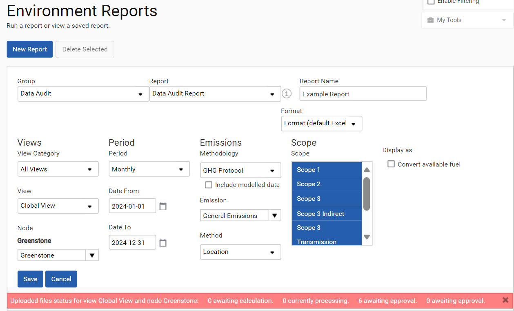
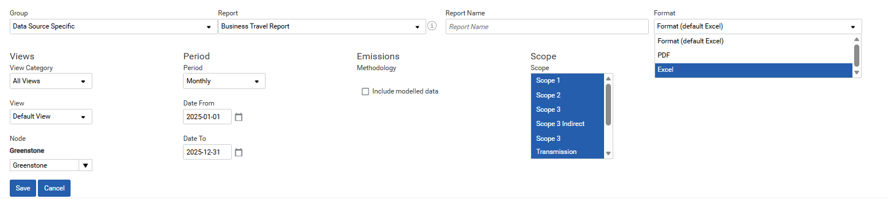
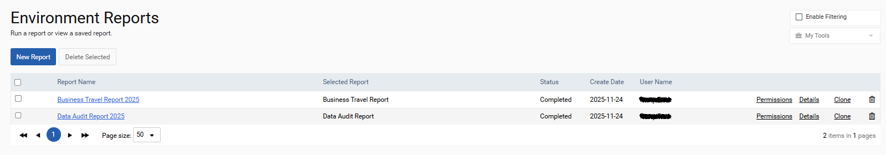

Standard reports are provided in the reporting section of the Environment module to enable you to analyze your GHG emissions and consumption performance over time. Reports are grouped into the categories below.
| Group | Definition |
| Data Audit | A detailed breakdown of consumption or emissions data. |
| Data Source Specific | Detailed information on each of the business activity types that can be uploaded to the platform, for example a business travel report or a waste report. |
| File Analysis | Information on the files that have been uploaded to the environment module including who they were uploaded by and when. |
| Summary | Reports which provide a high-level overview of the organization or the selected node. |
The table below lists all the available standard reports, with a description of each.
| Report | Description |
| Annual DataSource Progress Report | The Annual Datasource Progress Report details the energy consumption, business travel and water emissions and consumption plus the waste consumption for the selected year, the two preceding years and the baseline year. |
| Annual Progress Report | The Annual Progress Report details the location-based and market-based emissions plus intensity factors for the selected year, the two preceding years and the baseline year. |
| Business Travel Report | A business travel emissions and consumption report |
| Data Audit Consumption Report | A detailed monthly breakdown of the consumption by node and data source |
| Data Audit Cost Report | A detailed monthly breakdown of the cost by node and data source |
| Data Audit Dashboard Bulk Export | An export of the data within the Data Audit dashboard, in the proper format, in bulk (without the need for the Data Audit dashboard export 10000 rows restriction) |
| Data Audit Emissions Report | A detailed monthly breakdown of the emissions by node and data source |
| Data Audit Bespoke Fields Report | A detailed breakdown of the emissions and consumption which has been tagged with a bespoke field by node and data source |
| Data Audit Report | A detailed breakdown of the emissions and consumption by node and data source |
| Data Quality Report | A detailed breakdown of emissions and consumption by node and data source showing what proportion of data is estimated |
| Energy Compliance Report | A detailed breakdown of the energy consumption and cost by node and data source |
| Energy Report | An energy emissions and consumption report for your organization |
| Environment Targets Report | A list of the environment targets for your organization |
| Hardware Report | A detailed breakdown of hardware data by equipment type, brand and model |
| Input Data Analysis Report | Lists all files uploaded by node, data source, file name, user and upload date specifying the calculation status and the dates that the data within the files apply to |
| League Table Report | A league table of emissions, normalised emissions, and consumption for your organization |
| Methodologies and Gas Breakdown Report | A detailed breakdown of all the nodes and data sources with the emissions breakdown by GHG gas type and methodology |
| Normalised Data Report | A detailed breakdown of the normalised emissions and consumption by node and data source for the selected normalisation metric |
| Paper Report | A paper report showing consumption by type |
| Risk and Opportunities Report | A report of all the management information, risks and opportunities by node |
| Road Breakdown Report | A detailed breakdown of road data by node, data sources, vehicle type and fuel type |
| Scope 2 Energy Report | A detailed breakdown by node and data source of the market based and location-based Scope 2 energy emissions and consumption |
| Scope Report | A detailed breakdown of the emissions and consumption making up each Scope portion for your organization |
| Summary Report | A summary report of your organization’s overall emissions and consumption |
| Summary Report (Estimated) | A summary report of overall emissions and consumption showing what proportion of data is estimated |
| Uploaded Files Analysis Report | Lists the nodes and data sources identifying any data gaps or possible duplicate data |
| Waste Report | A waste report with emissions and consumption by material and treatment type |
| Water Report | A water report with emissions and consumption by water type and sub-type |
To begin running a report, select the group and the corresponding report. This will trigger additional fields to become available, which allow you to select the nodes, views, time periods, and other fields required to configure your report. When you have finished making your selections, click Save to generate the report. You can continue working while the report runs in the background.

Reports can be generated in PDF or Microsoft Excel format.

A report can be run again using essentially the same settings as before by clicking the Clone action. Note: When using the Clone action, the user must alter some aspect of the report’s configuration or a validation error will prevent the clone from running.
The Details action can be used to check the settings that were configured when the report was last run.
